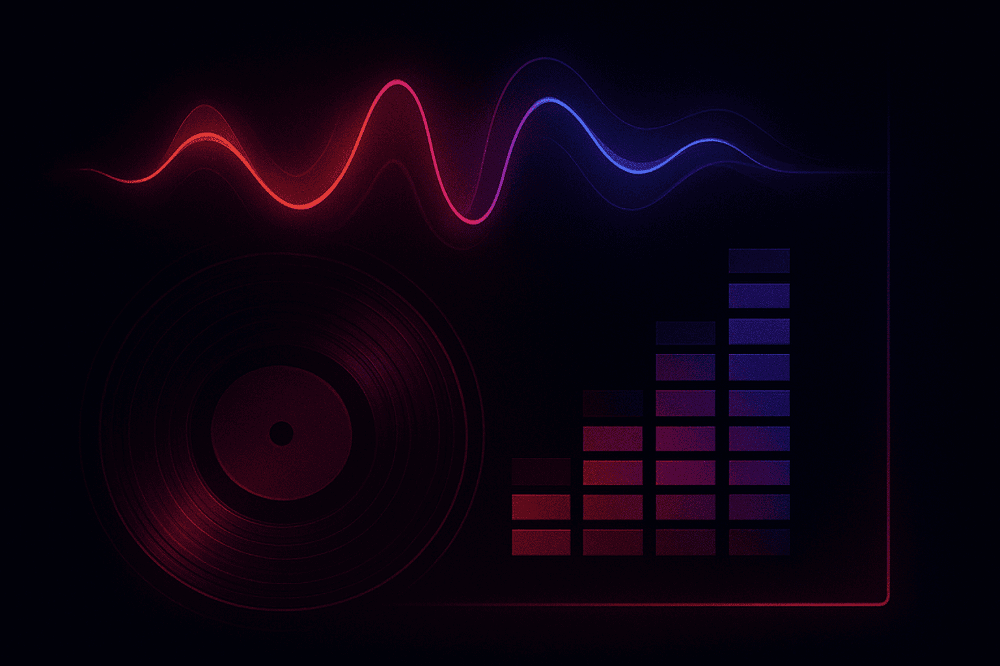
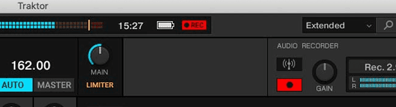
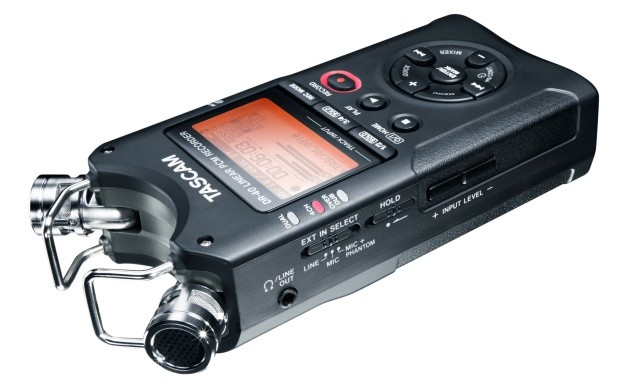
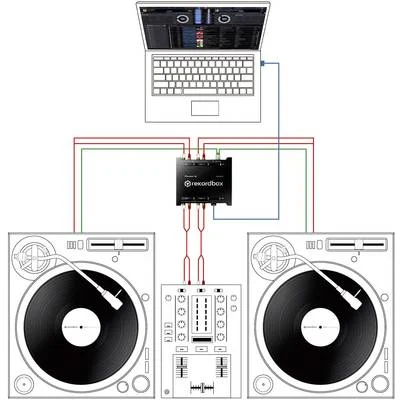
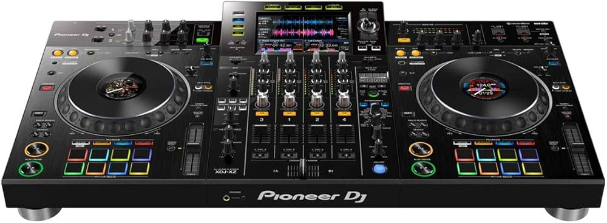
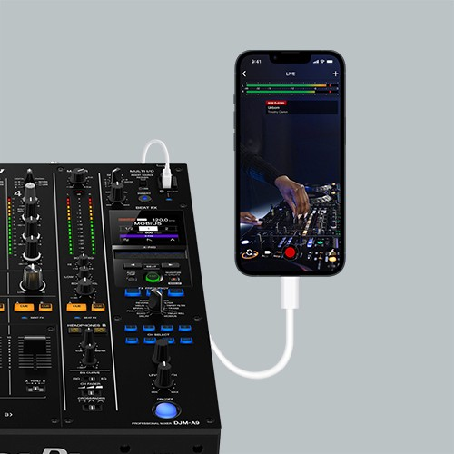
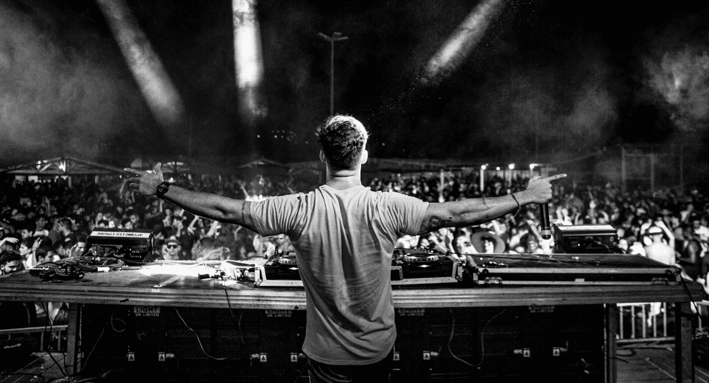
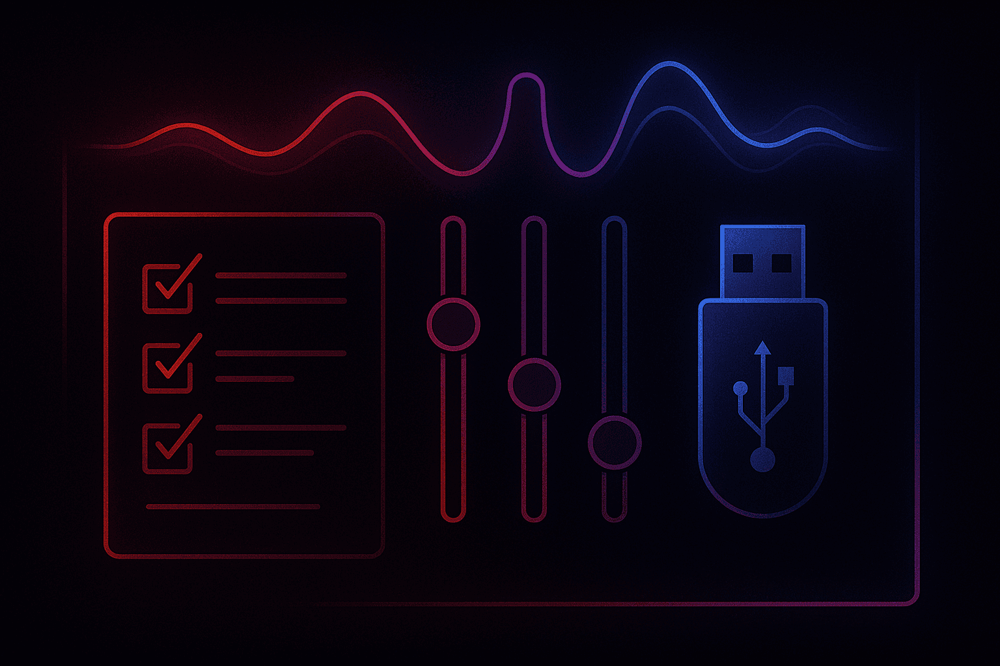

Recording your DJ sets is the single most effective way to critique your own transitions, promote your brand, and secure more bookings. I think making your own recordings of your DJ sets is an important skill to learn - and these days, can be achieved without any expensive DJ gear.
Recomended Articles:
- Harmonic Mixing For DJs
- How To Beatmatch For DJs
- How To Make a DJ Mix
What You’ll Learn About Recording DJ Mixes
- The most reliable hardware and software methods for capturing high-quality audio.
- How to handle gain staging to ensure a clean, distortion-free signal.
- Tips for recording in various environments, from bedroom studios to loud clubs.
- How PulseDJ.com helps you curate the perfect tracklist before you even hit record
Enhancing Your DJ Recording with PulseDJ
While recording software captures the sound, the quality of the mix itself depends on your track selection and programming. This is where PulseDJ becomes your secret weapon. PulseDJ is a smart DJ copilot that runs alongside your dj software - including Serato, Rekordbox, Virtual DJ , and Traktor.
You don't use PulseDJ to capture the audio; you use it to ensure the musical journey is flawless. When you load a track, PulseDJ reads your history and library to recommend creative next tracks in real-time.
Here is how I use it to prep for a recorded mix:
- Harmonic Mixing: I look for suggestions highlighted in green in the PulseDJ panel. This indicates the key is a perfect match for the current track 3. This guarantees that my recorded transitions will be smooth and musically consonant, which is vital for a professional-sounding product.
- Discovering Gems: Sometimes I get stuck playing the same "safe" tracks. PulseDJ suggests songs based on historic usage from other DJs and my own style. It helps me dig up tracks I might have forgotten, making the recorded set more unique.
- Hot 100 : If I want to record a mix that will trend, I check the PulseDJ HOT 100 charts to see what is working on dancefloors globally or in specific countries.

Because PulseDJ runs as a separate application and reads data one-way, it doesn't interfere with your performance or cause crashes. It essentially acts as a producer sitting next to you, ensuring you pick the right song before you even bring up the fader.

Why Recording Your DJ Mixes Matters

In my years as a performer, I’ve learned that a dj career is built on more than just live gigs; it’s built on content. Recording mixes serves two vital purposes.
- First, it allows you to listen back to your performance critically. You might think a transition was flawless in the heat of the moment, but hearing the audio files later might reveal that the energy level dipped or the beatmatching drifted.
- Second, promoters and other djs need to hear what you can do before they trust you with a prime-time slot.
Whether you are using a basic DJ controller or a full club setup, capturing a clean recording is non-negotiable.
How To Record Your DJ Mix: 7 Methods
Method
Audio Quality
Difficulty
Best For
Internal Software
High (Digital)
Bedroom DJs with local files
External Recorder
High (Analog/Digital)
Medium
Club sets & backup recording
Audio Interface/DAW
Professional
Studio mixes & post-production
Direct to USB
Standalone users (CDJ/XDJ)
DJM-REC App
Very Easy
Pioneer DJM mixer users
There are many methods for recording your DJ mixes, here are my favorite seven ways.
1. The Simplest Method: Built-In DJ Software Recorders

For most digital DJs, the easiest recording method is already sitting right in front of you. Modern DJ software like Serato, Rekordbox, Traktor, and VirtualDJ usually features a built in recorder.
The process is generally straightforward:
- Open your software and locate the rec settings panel.
- Select the source (usually the master output).
- Adjust the volume level so the meter hits yellow but never red (clipping).
- Hit record.
However, there is a catch. If you rely on streaming services like TIDAL, Beatport streaming, or SoundCloud Go+ within your DJ software, the record button is often disabled due to licensing restrictions.
To record audio internally, you generally need to own the music files on your hard drive or computer.
2. Recording DJ Mixes With a External Audio Recorder

If you are playing on a standalone DJ mixer or want a backup recording process that won’t crash if your laptop freezes, an external audio recorder is a lifesaver. Devices like the Zoom H4n or Tascam DR-40 are standard dj equipment for touring DJs.
To do this, connect the "Rec Out" or "Master 2" from the mixer into the incoming signal inputs of the recorder using RCA or XLR cables. This is a great way to get clean audio without relying on your computer's CPU.
Always check your batteries or bring a power supply; nothing kills a vibe like the battery life dying halfway through a DJ set.
3. Recording DJ Sets via an Audio Interface into a DAW

For the highest fidelity, many producers prefer using a dedicated audio interface. You connect the output of your mixer or controller into the interface, which then feeds into a daw or audio editor like Ableton Live, Logic Pro, or Audacity.
This method gives you granular control. You can record separate audio tracks if you have a multi-input interface, allowing you to fix mistakes later. Once the audio is in the audio editor, you can edit transitions, apply mastering limiters, and boost the overall volume to commercial standards.
4. Standalone Units: Record Directly to USB

If you use standalone gear like the Pioneer DJ XDJ-XZ or Prime series, you can often record directly to a usb stick or sd card. There is usually a dedicated port (often labeled USB 2) and a physical button to start recording.
This is arguably the most convenient method for a live performance because it requires no extra equipment. Just plug in a fast usb drive, press the button, and you walk away with a WAV file ready for upload.
5. Pioneer’s DJM-REC App

If you are using a modern Pioneer mixer (like the DJM-900NXS2 or V10), Pioneer's DJM-REC app is a game-changer. You connect your phone or iPad via a single digital cable (Lightning or USB-C) to the top of the mixer.
The app handles the limiting and gain staging for you. It can even capture video simultaneously or stream live. It’s a highly portable solution that keeps your laptop free for running your performance software.
6. The "Bootleg" Method: Using the Mic Input
I don't recommend this for a professional demo, but in a pinch, you can run a cable from your mixer’s booth output into your computer’s microphone jack. However, computer mic inputs are usually mono and noisy. You will need to adjust the input sensitivity drastically to avoid distortion. This should be a last resort if you lack a proper sound interface.
7. Recording Crowd Noise

If you want to record your dj set to sound like a live album, you need to capture the room. A clean recording from the mixer sounds perfect, but it lacks atmosphere.
The pro move is to use a handheld recorder with built-in microphones to record the crowd noise on a separate track, while recording the direct board feed simultaneously. In your editing software, you blend the "room" track in lightly during breakdowns or applause to bring the listener into the club.
Essential Pre-Recording Checklist For DJs

Before you play the first track, run through this checklist to ensure a good mix:
- Check Your Levels: Ensure your channel gains are not peaking. A distorted incoming signal cannot be fixed in post.
- Format Your Media: If using a usb or sd card, format it to FAT32 or exFAT to ensure compatibility.
- Disconnect Unnecessary Apps: Close web browsers and WiFi if possible to prevent system dropouts.
- Set Cue Points: Ensure your cue points are accurate so you aren't scrambling during the recording.
- Curate Your Tracks: This is where software tools become invaluable
Final DJ Set Recording Tips for a Professional Result
Once you have finished the set, take the file into an audio editor. Trim the silence at the start and end. Normalize the audio to roughly -1dB or 0dB so the volume is competitive with other mixes on the internet.
Don't obsess over one tiny mistake. Human feel is important. However, if you really messed up a blend, using a daw like Ableton allows you to cut out the mistake and record the transition again if necessary.
Start Recording Your Best Mixes with PulseDJ
There are many ways to record a DJ set - each with pros and cons. Whether you use a standalone recorder, a sound interface, or just hit the button in Serato, the most important factor is the music selection.
Make sure every mix you commit to video or audio is your best work by using PulseDJ to guide your track selection. It integrates seamlessly with your existing hardware and software workflow, ensuring you never "black out" during a set, and mix sound and songs like a pro.
Download PulseDJ for free today and start creating mixes that demand to be recorded.
‹ How to Plan a DJ Set: A Guide for Professional Mixes